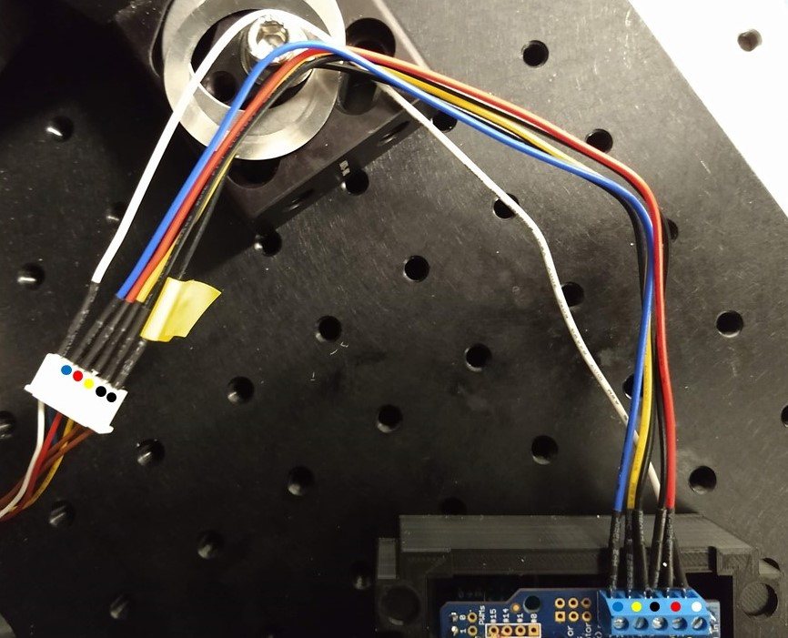
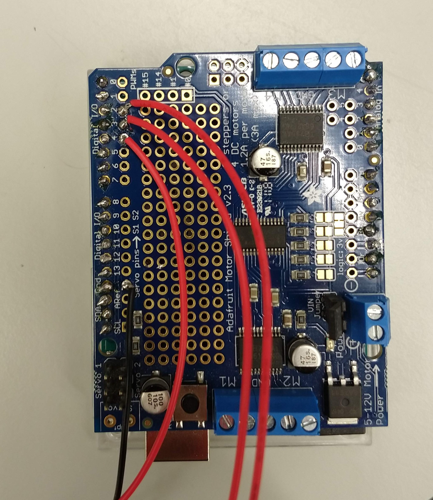
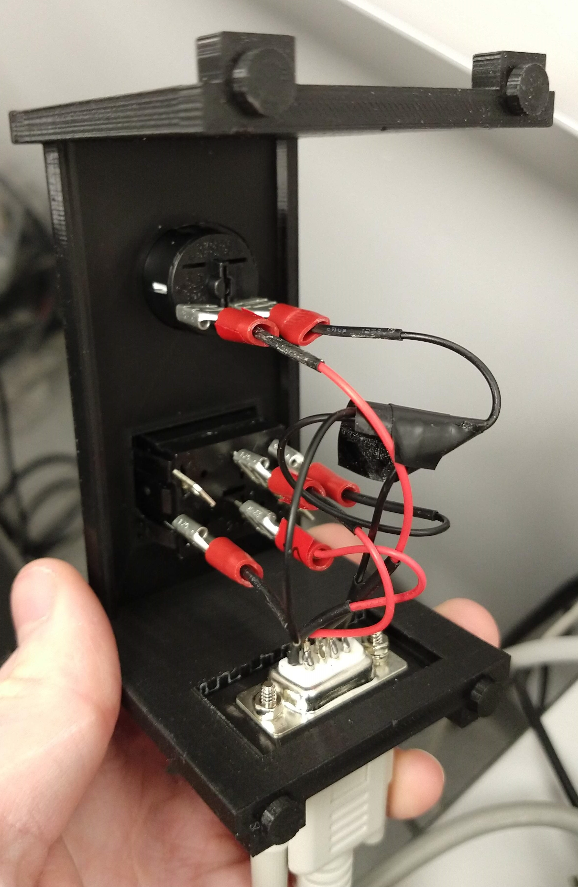

Description
To add in-sample offset shift to reflection autofocus systems (either home built or commercial systems such as the ASI CRISP) We developed an Arduino based controller for shifting the focus lock position of reflection based autofocus systems.

LifeHack incorporates a reflection based ASI CRISP as its primary method of maintaining focus. Similar to many other systems, it reflects an IR beam off a coverslip, and uses shifts in the position of this beam to maintain constant objective-slide separation by closed loop control.
The limitation of this approach is that it only allows for focus lock at/ very near to the coverslip, in a range < 1 um for a 100x high NA objective. The lock position can be offset by a fixed amount by physically displacing the autofocus device. However, to image cells at different heights within the same sample, this approach is not sufficient.
As the Focus Shifter module on LifeHack has its own beam path and tube lens we were able to produce large changes in the lock position by implementing a motorized Arduino controlled tube lens on this path. This effectively offsets the lock position (the coverslide) and the camera/ excitation focus by a variable amount, in our case allowing ~ 10 um of lock range on 100x NA 1.49 TIRF objective, instead of the standard < 1 um with a fixed autofocus tube lens.
Although this implementation is built around an ASI CRISP, in principle it should work for any commercial or home built autofocus system. To allow for use in conjuction with the ImLock system we recomend operating at 940nm.

Parts
Construction
👁 View CAD Design Online 👁
The module can be constructed following the 3D design. The zoom lens housing should be fixed (just tape it a bit) with the lens 1 rotation away from the main body end for CRISP set up. This allows the focusing range to be biased into the sample. The set up instructions for the CRISP system can be found here.
Control Set Up
Wire the motor to the Adafruit control board in 6-wire configuration. Ensure to connect an external 12V power supply to the Arduino board to supply sufficient power to the motor.
Code is included to control the stepper motor and microscope focus via Arduino. Download the Arduino IDE, and open the Arduino focus-controller.ino sketch. Install the _Adafruit\_Motor\_Shield\_V2\_Library_ via the _Sketch\>Include Library\>Manage Libraries_ interface. Upload the code to the Arduino board.
Connect to the Arduino board and control the motor using the Arduino (or any other) serial monitor interface. Commands are encorporated to move the motor, and hence the lens, in both directions and to a zero point. There are also commands to adjust movement limits and speed.
Axial magnification is proportional to the square of the lateral magnification. In order for a tube lens shift of several mm to cause sufficient focal shift, we need to use a shorter focal length tube lens for the autofocus, compared to the imaging tube lens. In our case, the imaging tube lens is f=200mm, and the autofocus is f=100mm, reducing the axial autofocus magnification by a factor of 4 – this gives us an ~10 um lock range.
Control Box
In practice the serial monitor control is too clunky for any more than initial tests. For regular use there is a dual throw switch to control the lens position and a home button to return to a set "zero" point. Both are contained in a 3d printed box.

To produce this, simply solder suitable lengths of wire to the arduino ports (up=2, down=3, home=4, ground) at one end and to a 9 pin connector at the other. This is best done with the arduino and connector already seated in the box.

At the control box end, solder suitable lengths of wire to the corresponding pins on a 9 pin (DB9) connector at one end and spade crimp connectors at the other.
Each connection requires a ground but the arduino only provides one. Creating a multi-ended connector, as below, solves this and contains the solder point within the control box.
The buttons and 9 pin connector can then be inserted into the control box and connected using the crimp connectors.


Software
Software is included to be uploaded and run on the arduino. This will function either through serial command or control button input.
👁 Get Software from GitHub 👁Serial Commands
- move [value] - moves lens to specified value
- speed [value] - sets movement speed to specified value (valid values 0 - 255)
- relmove [value] - moves lens by specified number of steps
- pos? - returns current lens position
- speed? - returns set movement speed
- setzero - sets current position as zero
- stepsize [value] - sets the size of a movement step
- stepsize? - returns set "stepsize"
- home - moves lens to set zero position
- setmax [value] - sets upper limit of lens movement range
- setmin [value] - sets lower limit of lens movement range
- poslim? - returns values for "setmax" and "setmin"
- help - prints list of commands